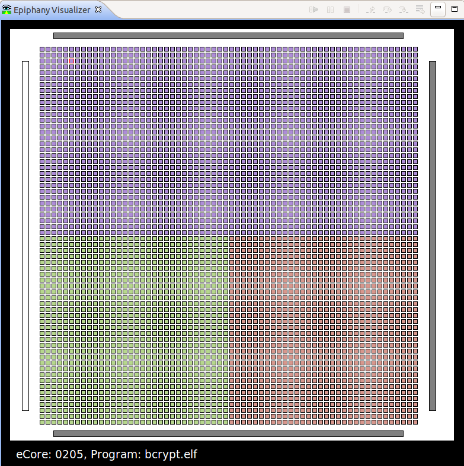

Andreas Olofsson (Adapteva)
Marc Khouzam (Ericsson)





> run-gdbstandalone.sh [-b <build_log>] -e <binary> [arg1 ... argn]
Use the below links to change themes
Default -
Sky -
Sky2 -
Blood -
Beige -
Simple -
Serif -
Night -
Moon -
Solarized